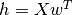

multivariate¶
| Title: | Multivariate Linear Regression. |
|---|
@author: Bhishan Poudel
@date: Sep 22, 2017
@email: bhishanpdl@gmail.com
The cost function is given by

Minimizing the cost function w.r.t. w gives the solution:
-
multivariate.check_results(y_train, x1_train)[source]¶ Multivariate Regression with statsmodels.api
Parameters: - y_train (float) – target column vector of floats.
- x1_train (array) – features+1 dimensional numpy array
This fits the multivariate linear regression in four lines:
import statsmodels.api as sm model = sm.OLS(y_train, x1_train) result = model.fit() print (result.summary())
-
multivariate.compute_rmse(X, t, w)[source]¶ Compute the RMSE.
RMSE is the root mean square error.
h is the hypothesis.

To find the norm of the residual matrix h-t we may use the code:
# inner1d is the fastest subroutine. from numpy.core.umath_tests import inner1d np.sqrt(inner1d(h-t,h-t)) # We can also use another method: ht_norm = np.linalg.norm(h - t)
-
multivariate.read_data(infile)[source]¶ Read the datafile.
Parameters: infile (str) – path to datafile
-
multivariate.train(X1, t)[source]¶ Train the data and return the weights w.
Parameters: - X1 (array) – Design matrix of size (m+1, n). I.e. There are m features and one bias column in the matrix X1.
- t (column) – target column vector
Note
Here the design matrix X1 should have one extra bias term.
Warning
The operator @ requires python >= 3.5